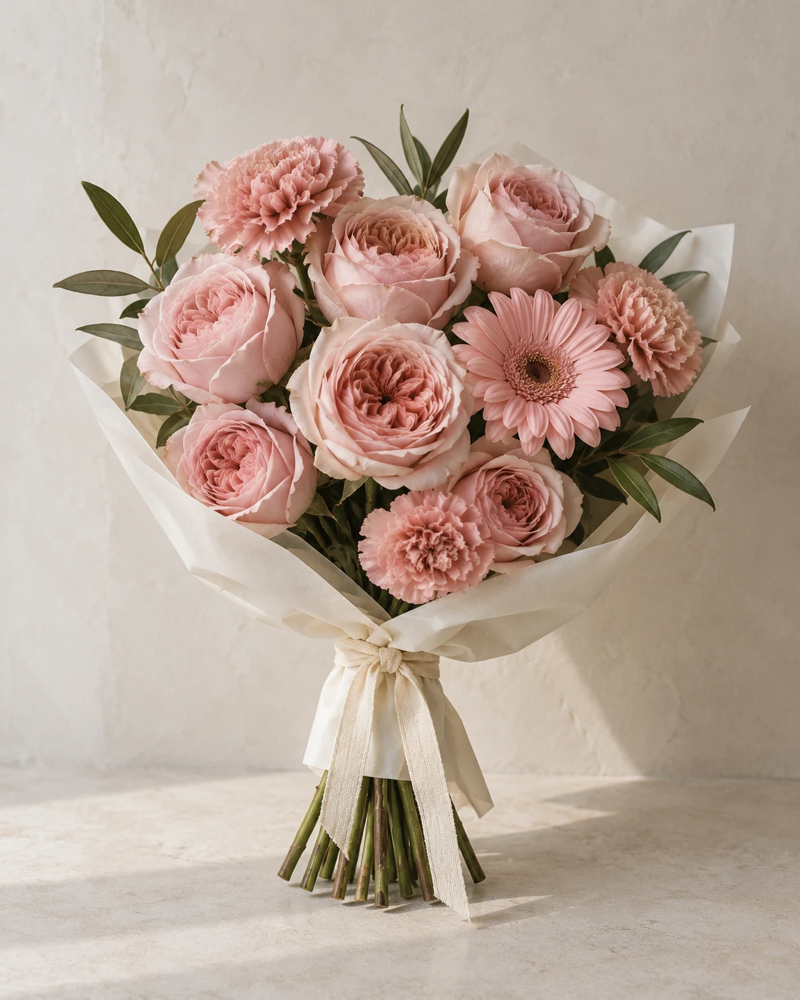
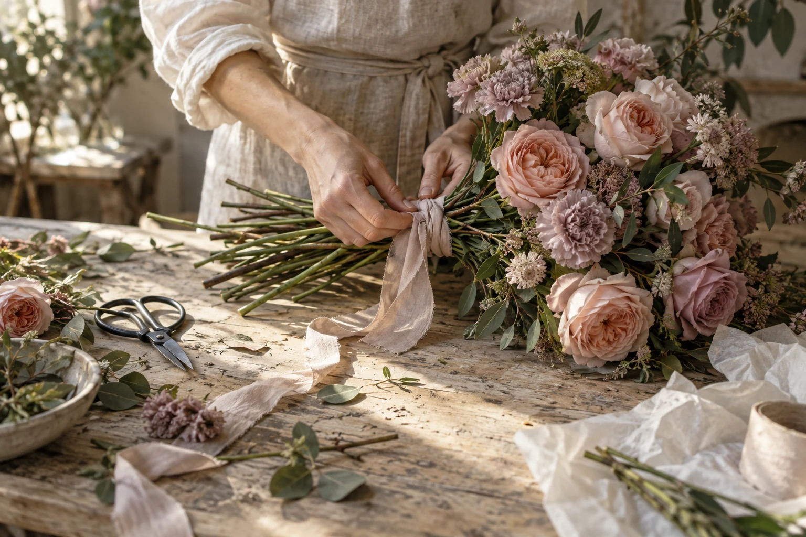
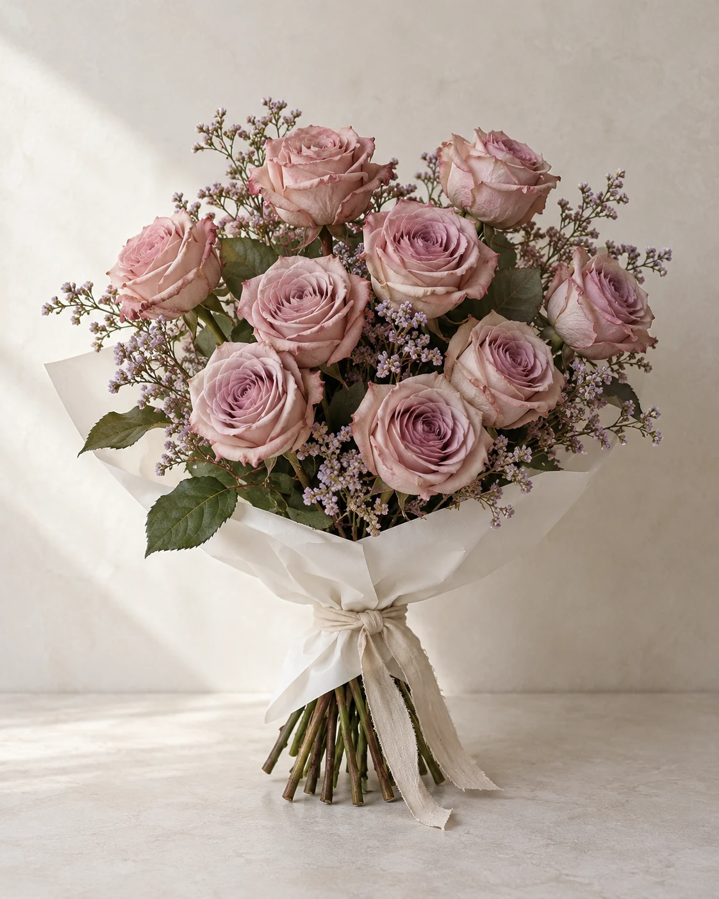
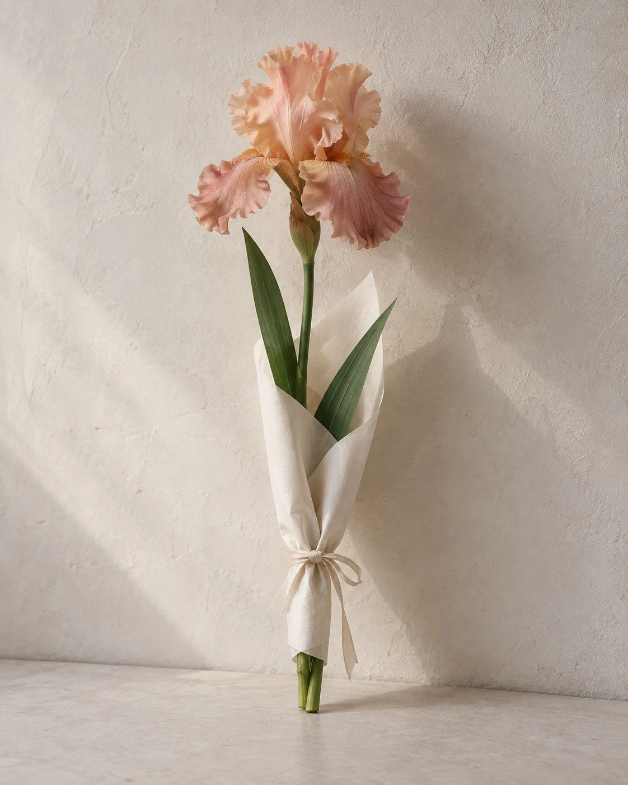
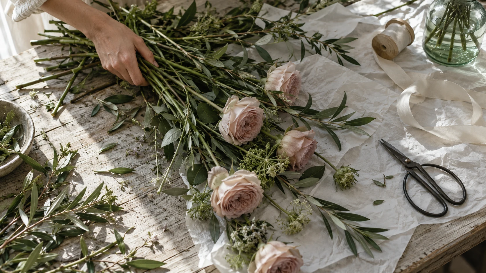
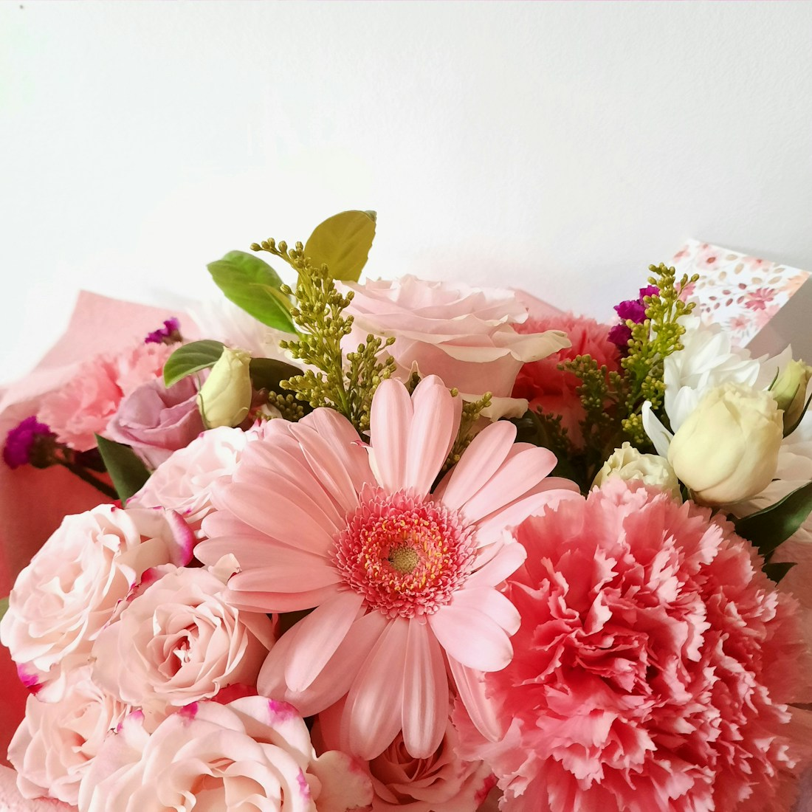

Розовое утро
Садовые розы, гербера и гвоздики.
Мягкая палитра, открытая форма.
от 3 900 ₽
Независимая цветочная мастерская / концепт

Для чувств, которым
тесно в словах.
Нежные оттенки, свободные линии и немного воздуха между цветами.
Выбрать композицию Размер, ваза и открытка —Композиции мастерской
От одного выразительного цветка до букета.
Выберите характер, а затем — размер и детали.

Садовые розы, гербера и гвоздики.
Мягкая палитра, открытая форма.

Пыльно-розовые розы и статица.
Воздушный букет без лишних деталей.

Один стебель, выразительный изгиб.
Для самого личного маленького жеста.
Демонстрационные композиции и цены. Изображения — визуальные ориентиры; точный состав не фиксирован.
Мастерская в деталях

Не идеальные.
Живые.
Тонкий изгиб стебля, приоткрытый лепесток, немного свободного пространства. В этой концепции мастерской цветы остаются собой, а упаковка лишь бережно обрамляет их.
Мы показываем простые материалы и понятный процесс: подобрать оттенки, собрать свободную форму, перевязать стебли. Такой могла бы быть повседневная жизнь «Тихого сада».

Размер меняет объём композиции. Стеклянная ваза — готовое место для цветов. А для слов, которые хочется оставить, есть открытка.
Все варианты доступны в окне выбора. Стоимость пересчитывается сразу.
Вернуться к композициямНа следующий день
Чистым острым инструментом срежьте кончики стеблей перед тем, как поставить цветы в вазу.
Вымойте вазу, уберите листья ниже уровня воды. Каждый день наливайте свежую прохладную воду.
Держите цветы вдали от батарей, прямого солнца и спелых фруктов.
В окне композиции доступны три размера с отдельными ценами. Для ириса — один, три или пять стеблей. На иллюстрации ириса показан один цветок; остальные варианты демонстрируют расчёт стоимости.
Это визуальная концепция, а не ассортимент действующей мастерской. Изображения передают характер и палитру. В настоящей мастерской сезонные цветы и любые замены необходимо согласовать до заказа.
Этот сайт создан для портфолио. Здесь можно настроить композицию, сохранить выбор в текущей вкладке или скачать его в файл. Доставка, оплата и отправка заявки не подключены.